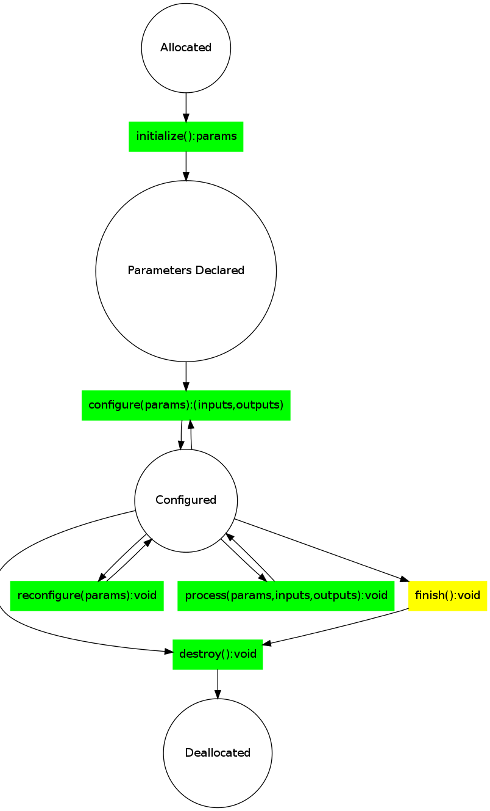

The life cycle of the ecto module as a state machine.

The states of the ecto module are as follows:
- Allocated : the module is allocated on heap.
- The module is allocated by the system, typically in a python script. Of course the module’s constructor will be called.
- Parameters Initialized : the module has declared its parameters to the world.
- initialize is called by the system. Here the module declares its parameters to the world.
- Configured : the module is fully configured, inputs and outputs have been declared and setup.
- configure is called before the module is asked to process. During this call, the module should declare its inputs and outputs.
- process is called when the module is fully configured.
- reconfigure is called anytime a parameter has changed. Within this call the module may not change its inputs and outputs.
- Deallocated : the module is no longer need and is destroyed.
- The function destroy is called before the module is deallocated. This is a good place to do any system level cleanup.
- a user call to finish() will signal will cause the ecto graph to stop execution and exit cleanly.
- An outside force may shutdown the graph, in which case the graph will trigger the call to destroy before deallocation.